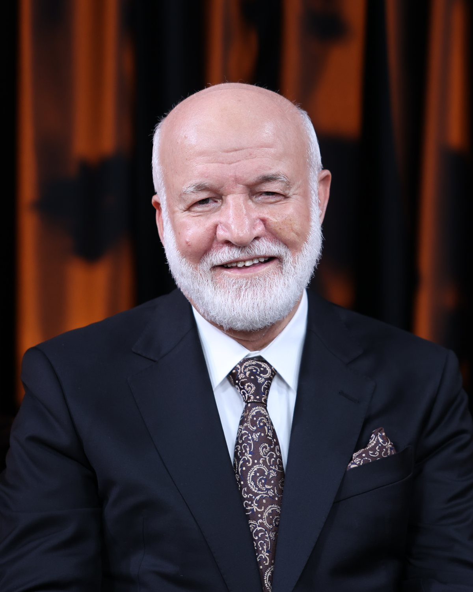

HER AN KUR’AN
HER AN MUTLULUK
Kainatın Mutluluk Merkezi
Hakkımızda
Bir rehber. Bir müjde. Bir davet.
Allah, insanın mutlu olmasını istiyor. Bu sebeple Kur’an bir mutluluk rehberidir, mutluluk davetiyesidir, mutluluk müjdesidir ve mutluluk garantisidir.
O sebeple diyoruz ki: Her An Kur’an, Her An Mutluluk. Sizi Allah’a davet ediyoruz. Sizi mutluluğa davet ediyoruz.
Dr. Abdulcabbar Boran, Kur’an-ı Kerim ayetleri ve hadisler ışığında sorularınızı cevaplıyor.
Canlı Yayın
HER GÜN BİRLİKTEYİZ
21.00’de canlı yayın
HER GÜN BİR İZ
VİDEOLAR
HER PAZAR BİR SOHBET
DR. ABDULCABBAR BORAN
- 16 DİLBir Platform
- MİLYONLARCABir Buluşma
- DÜNYA GENELİNDEBir Davet

Hayatını ve çalışmalarını toplumlar ile inançlar arasında uyum, sevgi ve anlayışı yaymaya adamış seçkin bir alim.
-
Bir Adanmışlık
Hayatını ve çalışmalarını toplumlar ile inançlar arasında uyum, sevgi ve anlayışı yaymaya adamış seçkin bir alim olan Dr. Boran, uluslararası birçok konferansa katılarak farklı inanç toplulukları arasında barış, anlayış ve iş birliğini geliştirme konusundaki derin görüşlerini paylaşmıştır. Bugüne kadar sayısız insana dokunmuş ve dünya genelinde geniş kitleleri etkilemiştir.
-
Bir Misyon
Dr. Abdulcabbar Boran kariyerini kutsal kitaplarda yer alan sevgi, mutluluk ve ilahi hikmet mesajlarını dil, din ve kültür sınırlarını aşacak şekilde yaymaya adamıştır. Onun yaşam misyonu; dinler arası diyaloğu güçlendirmek, dünya dinlerini birleştirici değerleri ortaya koymak ve insanları hakikate ulaştırmaktır.
-
Bir Platform
Akademik çalışmalarının yanı sıra Dr. Boran, dünya çapında tanınan Kainatın Mutluluk Merkezi (ibrahimlive.com) sosyal medya platformlarının kurucusudur. Bu platform, 16 dilde milyonlarca insana ulaşmakta; insanlara derin ilhamlar veren manevî yorumlar sunarak sevgi ve mutluluk gibi evrensel değerleri benimsemeleri için rehberlik etmektedir.
-
Bir Katkı
Sosyal sorumluluk projeleri kapsamında Dr. Boran; çeşitli üniversite, dernek ve kurumlara gönüllü konferanslar vererek öğrencileri, akademisyenleri ve toplumu birlik, beraberlik, sevgi ve mutluluğa teşvik eden öğretilerle buluşturmaktadır.
“ Sizi Allah’a davet ediyoruz. Sizi Mutluluğa davet ediyoruz. ”